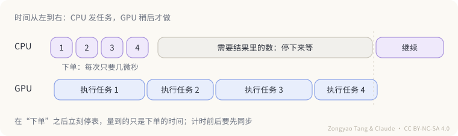

这一单元只走一条线：GPU 和 CPU 是为不同目标设计的两种机器 → 所以你的 Python 程序和 GPU 其实各跑各的 → 于是“慢”可能出在三个不同的地方 → 要知道出在哪，只能测量。后面所有单元都在这条线上展开。
第 3 部分 · GPU 与 CUDA 执行模型3.1 GPU 环境与第一次性能分析
这一单元回答GPU 凭什么快？我的程序时间到底花在哪？
接着 1.5：你已经在 GPU 上训练过 GPT-2，现在拆开看 GPU 为什么快、程序慢在哪里。
讲解
1CPU 是超跑，GPU 是公交
CPU 为“单个任务尽快完成”而设计（latency-oriented）：大缓存、分支预测、乱序执行，晶体管都花在让一条线程跑得快上。GPU 为“单位时间完成最多的任务”而设计（throughput-oriented）：成千上万个简单的计算单元加上极高的显存带宽，单个线程并不快，但能同时推进海量相同的工作。
芯片上的晶体管数量是有限的，花在哪里就决定了机器擅长什么。
CPU 把大部分面积给了“让一条指令流尽快跑完”的部件：很大的缓存（数据就在手边）、分支预测（提前猜下一步）、乱序执行（哪条指令能先做就先做）。真正做运算的单元只占一小部分。一颗服务器 CPU 有几十个这样的核心。
GPU 反过来：控制逻辑和缓存都做得很简单，省下的面积全部铺成运算单元，再配上带宽极高的显存。一块 GPU 能同时推进几万到几十万个线程。单看其中任何一个线程，它比 CPU 的线程慢得多，等数据也等得更久。
两者的差别可以用两个词概括：CPU 追求延迟低（一件事多快做完），GPU 追求吞吐高（单位时间做完多少件事）。把 1000 万个数各乘以 2：CPU 一个核一个一个算，每个都很快；GPU 每个都慢，但一次算几十万个，总时间短得多。如果只有 100 个数，把数据送到 GPU 的时间都比 CPU 直接算完要长。
打个比方超跑能去任何地方，一个人到得最快；公交一次拉几十人、走固定路线。要运一万个人，公交赢；只送一个人，超跑赢。
所以只有工作量大、而且是大量相同的小任务（矩阵的每个元素、图片的每个像素）时，GPU 才划算；逻辑复杂、必须串行的部分留给 CPU。
出处PMPP §1.1- 既然 GPU 是另一台为吞吐设计的机器，那你写的 Python 程序和它是什么关系？它们并不是一起一步步执行的。
2Python 只是在点单：GPU 是异步执行的
调用一个 CUDA 运算时，CPU 只是把 kernel 放进 GPU 的执行队列就立刻返回，GPU 稍后才真正去算。CPU 和 GPU 是两条并行的时间线。
执行
y = x @ w时，PyTorch 做的事是：把“做一次矩阵乘法”这个任务放进 GPU 的任务队列，然后立刻返回。这时y只是一个“结果将来会放在这里”的句柄，GPU 可能还没开始算。只有当你真的需要结果里的数（print(y)、y.item()、y.cpu()）时，CPU 才会停下来等 GPU 算完。
CPU 发任务只要几微秒；只有要用结果时才停下来等 所以这样计时是错的：
t0 = time.time() y = x @ w # 只是把任务放进队列 print(time.time() - t0) # 量到的是“下单”的时间，比如 0.0001 秒
正确的做法是在计时的起点和终点都调用
torch.cuda.synchronize()，它的意思是“等 GPU 把队列里的任务全部做完”。这个机制还有另一面：GPU 的任务是 CPU 一个一个发过去的。如果每个任务都很小（比如对几百个小张量各做一次加法），CPU 发任务的速度跟不上 GPU 做任务的速度，GPU 大部分时间在空等。这时慢的不是 GPU，而是“发号施令”这个环节。
动手：正确地给 GPU 代码计时
三个要点：预热、同步、多次取平均。
import time, torch def bench(fn, repeat=20): for _ in range(3): fn() # 预热 torch.cuda.synchronize() # 等之前的任务全部做完，再开始计时 t0 = time.perf_counter() for _ in range(repeat): fn() torch.cuda.synchronize() # 等这 repeat 次真的做完，再停表 return (time.perf_counter() - t0) / repeat为什么两处同步都不能少：前一个保证“起点”时 GPU 是空闲的，否则会把之前没做完的任务算进来；后一个保证“终点”时任务真的完成了，否则量到的只是下单时间。
可以亲手验证异步：对一个很大的矩阵做
y = x @ x，不加同步计时，会得到零点几毫秒；加上同步，才是真实的几十毫秒。两个数字的差，就是 GPU 在你“以为算完了”之后还在工作的时间。另一种不打断 CPU 的方法是
torch.cuda.Event(enable_timing=True)：在 GPU 的任务队列里插入两个时间标记，由 GPU 自己记录执行到标记的时刻，最后用start.elapsed_time(end)读出毫秒数。打个比方像餐厅点单：服务员把单子交给厨房就去招呼下一桌了，菜什么时候做好，要去厨房问。
所以直接用 time.time() 计时，量到的只是“下单”的时间，计时前后要 torch.cuda.synchronize() 或用 CUDA event。反过来，CPU 下单太慢时 GPU 会闲着等，这就是“开销受限”。
出处Best Practices §8.1 计时- 上一条说到 GPU 可能在空等 CPU 发任务。把这一点推广开：一个 GPU 程序的时间，总共可能花在哪几类地方？
3程序慢，只有三种原因：算力、带宽、开销
GPU 上的时间要么花在计算（compute），要么花在搬数据（memory bandwidth），要么花在这两者之外的杂事（overhead：Python 解释、kernel 启动、框架调度）。先判断是哪一种，优化才有方向。
把一次计算拆开看，时间只能落在三处：
- 算力（compute）：运算单元真的在做乘法、加法。典型例子是大矩阵乘法。
- 带宽（memory）：运算单元在等数据从显存送来，或者等结果写回去。典型例子是
x + 1、ReLU、LayerNorm：每个元素只做一两次运算，却要把整个张量读一遍、写一遍。 - 开销（overhead）：GPU 根本没在干活。Python 解释器在执行、框架在检查形状和类型、CPU 在发下一个任务。典型例子是模型很小、张量很小的时候。
这三类的解药完全不同，用错了没有效果。比如一个带宽受限的 kernel，换成算力翻倍的显卡几乎不会变快，因为它本来就没用满算力；一个开销受限的小模型，把矩阵乘法优化到极致也没用，因为时间花在 Python 上。
一个快速判断的办法：把 batch 加大一倍。如果耗时几乎不变，说明原来是开销受限（GPU 还有大量空闲）；如果耗时也接近翻倍，说明 GPU 已经在满负荷工作，瓶颈在算力或带宽。
打个比方工厂产量低，可能是机器不够快、原料运不进来，或者工人在填表开会。给机器升级，解决不了原料堵在路上。
所以优化前先归类：算力受限就减少或加速计算（Tensor Core、低精度）；带宽受限就少搬数据（算子融合、数据复用）；开销受限就减少 kernel 数量和 Python 调度（CUDA Graphs、torch.compile）。
- 知道了慢有三类原因，接下来的问题是：我的程序属于哪一类？慢在哪一步？这不能靠猜。
4先测量，再优化：瓶颈常常不在你以为的地方
profiler 告诉你时间实际花在哪些 kernel、哪段 CPU 代码上。Amdahl 定律说：只优化占总时间比例 p 的那部分，整体最多快 1/(1−p) 倍。
直觉在性能问题上经常是错的。你以为慢在注意力的矩阵乘法，实际可能慢在数据加载，或者某个不起眼的
.item()让 CPU 和 GPU 每一步都同步一次。profiler（
torch.profiler）会列出每个算子在 CPU 上和在 GPU 上各花了多少时间。看它的输出时注意两列：CPU 时间高而 CUDA 时间低的条目，是开销；CUDA 时间高的条目，才是 GPU 真正在忙的地方。Amdahl 定律说明为什么要先找最大的那块。假设一步训练 100 毫秒，其中注意力 60 毫秒，LayerNorm 5 毫秒：
- 把 LayerNorm 优化到快 10 倍：5 → 0.5 毫秒，总时间 95.5 毫秒，只快了 4.5%。
- 把注意力优化到快 2 倍：60 → 30 毫秒，总时间 70 毫秒，快了 30%。
花同样的力气，效果差了一个数量级。而且每优化完一处，瓶颈就会转移，需要重新测量。所以性能工作的节奏永远是：测量 → 改一处 → 再测量。
动手：用 torch.profiler 做一次分析，并读懂它的输出
第一步：把要分析的代码包起来。 先空跑几步预热（第一次运行包含加载、编译等一次性开销，不能算进去），再开始记录：
from torch.profiler import profile, ProfilerActivity for _ in range(3): train_step() # 预热，不记录 with profile(activities=[ProfilerActivity.CPU, ProfilerActivity.CUDA]) as prof: for _ in range(10): train_step() print(prof.key_averages().table(sort_by="cuda_time_total", row_limit=15))第二步：看懂表格的几列。 每一行是一种算子（比如
aten::matmul、aten::layer_norm）：- Self CPU / CPU total：这个算子在 CPU 上花的时间。Self 只算它自己，total 包含它调用的其他算子。这部分是 Python、框架调度、发任务的开销。
- Self CUDA / CUDA total：它对应的 kernel 在 GPU 上真正执行的时间。
- # of Calls：调用次数。
第三步：从表里读出结论。 按下面的顺序看：
- 先按
cuda_time_total排序，看前三行。它们加起来通常占了大半时间，这就是该优化的地方（Amdahl 定律）。 - 再按
cpu_time_total排序。如果某个算子 CPU 时间很高、CUDA 时间很低，而且调用次数很多，说明它是“开销受限”：kernel 本身很快，时间花在一次次发任务上。 - 如果表里出现
aten::item、aten::to、cudaMemcpy而且占比不小，说明代码里有不必要的 CPU↔GPU 拷贝或同步。 - 把所有 CUDA 时间加起来，和这 10 步的实际总耗时比一比。如果 CUDA 时间只占一小半，说明 GPU 有一半时间在空等，瓶颈在 CPU 这一侧（数据加载、Python）。
第四步（可选）：看时间线。 表格只有总数，看不出先后。导出时间线可以看到 GPU 上哪里有空白：
prof.export_chrome_trace("trace.json")用 Chrome 打开
chrome://tracing（或 ui.perfetto.dev）载入这个文件。上面几行是 CPU 线程，下面是 GPU。GPU 那一行如果是一段一段的、中间有明显空隙，空隙就是 GPU 在等 CPU。常见的坑：只跑一步就下结论（一定要预热并多跑几步）；开着 profiler 测总耗时（profiler 本身有开销，测总耗时要关掉它，用同步后的计时）。
打个比方通勤一小时，其中堵车 50 分钟、走路 10 分钟。把走路练到 5 分钟，整体只快了不到一成。
所以先 profile，找到最大的那块再动手；一个只占 5% 的 kernel 就算快十倍，整体也几乎没有变化。
出处Best Practices §3.1 ProfileBest Practices §3.1.3 Amdahl's Law
串起来
因为 GPU 是为吞吐设计的，它适合大批量相同的工作，而且和 CPU 异步运行；所以直觉的计时会骗人，慢的原因也不止一种（算力、带宽、开销）；所以动手优化之前，先用 profiler 找出最大的那一块。
考考自己
不看讲解，用自己的话讲一遍。
- CPU 和 GPU 的设计目标有什么不同？这决定了什么样的工作适合放到 GPU 上？
- 为什么不加 torch.cuda.synchronize() 的计时不可信？
- GPU 程序慢，可能有哪三类原因？各自的优化方向是什么？
- 为什么优化之前要先 profile？用 Amdahl 定律举个例子。
术语
- profiler
- 性能分析器
- kernel
- 核函数
- asynchronous execution
- 异步执行
- synchronize
- 同步